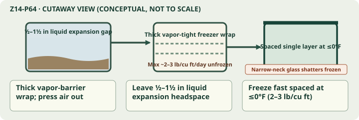

Z14-P64 · Food production and preservation · New manuscript
Package frozen foods airtight with expansion headspace and freeze fast at 0°F
Prevent moisture loss (freezer burn), cracked liquid jars, and slow-freeze cell mushiness in home freezers.
When it applies · Freezing home-grown produce, meats, broths, soups, and prepared emergency meals.
Equipment · Moisture-vapor-resistant freezer bags/wrap or rigid freezer containers, permanent marker, and freezer thermometer verifying ≤0°F.

Actions
- Pack foods strictly in thick moisture-vapor-resistant freezer bags, freezer paper, or rigid freezer-grade containers (NOT thin bread bags, milk cartons, or flimsy deli tubs that leak air and cause dry leathery freezer burn), pressing excess air cleanly out before sealing.[P12]
- Leave proper liquid expansion headspace (typically ½ to 1½ inches depending on container width and liquid content) so freezing soups, stocks, and sauces expand cleanly without bursting rigid containers or shattering wide-mouth straight-sided freezer jars (never freeze liquids in narrow-shoulder canning jars!).[P12]
- Freeze packages in a single spaced layer against cold freezer walls/shelves at 0°F or below—avoid overloading a freezer with more than roughly 2 to 3 pounds of unfrozen food per cubic foot in 24 hours so cores freeze rapidly instead of lingering in the Danger Zone.[P12, F03]
Failure recognition · Stacking 40 pounds of warm soup quarts tight together inside a chest freezer, taking three days to freeze while centers sour.[P12, F03]
Verify · Confirm freezer-rated packaging, air pressed out, liquid headspace left, date/content labeled clearly, and freezer holds ≤0°F.[P12, P17]
Stop or change course · Freezer temperatures rising above 0°F during heavy loading require pausing new warm additions until existing loads freeze solid.[P12, P17]
Evidence and editorial notes
- F03 · USDA / FDA / CDC · Four Steps to Food Safety (current web edition)
- Section: Chill > Refrigerate promptly · Conditions: Perishable food outside temperature control
Support: Refrigerate within two hours, or within one hour above 90°F.
Limitations: Ambient temperature spikes shorten safe holding windows. · Conflicting evidence: None; retained for food safety pack completeness.
Editorial note: Maintains five-pack integrity. · Specialist reviewer: Food safety and public health
Primary source · checked 2026-11-24 - P12 · NCHFP · Freezing Foods Safely (current web edition)
- Section: Freezing Foods > Blanching, Packaging, 0°F Storage, and Thawing · Conditions: Household freezers maintaining 0°F (-18°C) or lower
Support: Blanch most vegetables per tested times to inactivate quality-degrading enzymes, chill promptly, package in moisture-vapor-resistant freezer wrap/containers leaving liquid expansion headspace, freeze at 0°F or below, and thaw safely in the refrigerator (never on the counter).
Limitations: Freezing halts microbial growth but does not kill all pathogens; thawed foods require prompt safe cooking/handling. · Conflicting evidence: None; connects freezing quality control with Z15 outage loss decisions.
Editorial note: Core freezing and safe thawing evidence in Z14. · Specialist reviewer: Food safety and Extension preservation
Primary source · checked 2026-11-24 - P17 · USDA / FDA / CDC · Food Safety During Power Outage (current web edition)
- Section: Refrigeration Loss, Insulated Coolers, and Discard Boundaries · Conditions: Power outages or appliance failures affecting home food stocks
Support: Use appliance thermometers in both fridge (≤40°F) and freezer (≤0°F), group frozen foods tightly, avoid opening doors unnecessarily, use block/dry ice with ventilation precautions only when available, and discard perishable items held above 40°F over two hours.
Limitations: Dry ice sublimates into carbon dioxide gas and causes severe frostbite on bare skin; handle with gloves and ventilate spaces. · Conflicting evidence: None; integrates Z14 cold-chain protection with Z15-R03.
Editorial note: Links food preservation stocks to outage triage and safe discard gates. · Specialist reviewer: Food safety and emergency management
Primary source · checked 2026-11-24
Source lineage · NCHFP Freezing Foods Safely; new manuscript · Classification · New manuscript.